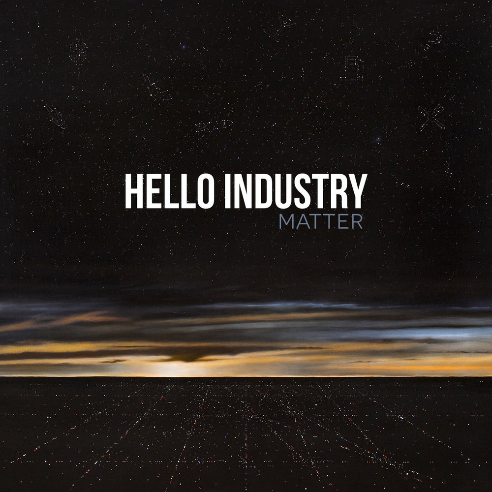

I write music about hope, joy, and pain — songs about life.
My latest solo albums — a collection of songs about grief and loss, beauty and rest — were recorded during and after the life of our beautiful 4th child, Olivia. These are songs for grieving parents like us, and for anyone who is looking for rest in midst of difficult circumstances.


These albums — a collection of songs about identity — were recorded from 2008 to 2013 with Hello Industry.

Tracks: When the Going’s Bad / Easy / Blind / Dream / Stop the Rain (B-SIDES) / When I Was Young / Manipulator / So Much For Love / The Innocent Will Die (anything is possible) / Brave / Done